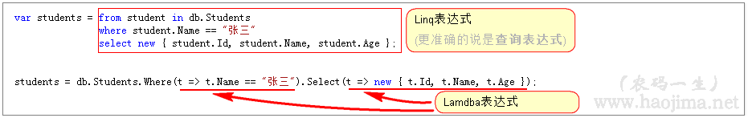
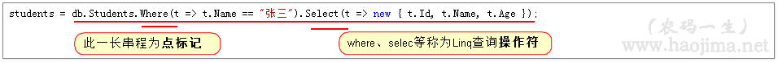
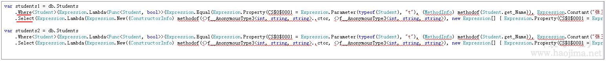
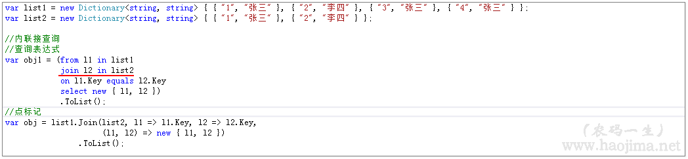
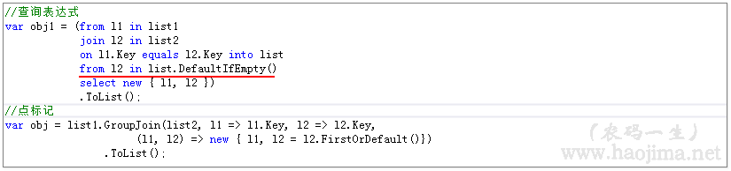
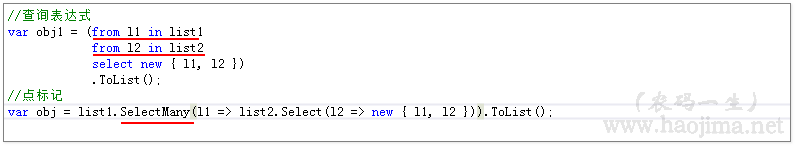

Linq表达式、Lambda表达式你更喜欢哪个？
阅读目录
什么是Linq表达式？什么是Lambda表达式？
如图：

由此可见Linq表达式和Lambda表达式并没有什么可比性。
那与Lambda表达式相关的整条语句称作什么呢？在微软并没有给出官方的命名，在《深入理解C#》中称为点标记。

查询表达式、点标记你更喜欢哪个？
所以，我们的标题的提问根本就不合适。应该是“查询表达式和点标记你更喜欢哪个？”。如：

//查询表达式 var students1 = from t in db.Students where t.Name == "张三" select new { t.Id, t.Name, t.Age }; //点标记 var students2 = db.Students .Where(t => t.Name == "张三") .Select(t => new { t.Id, t.Name, t.Age });
为什么选择点标记
我相信更多的人偏向选择点标记。具体什么原因我也说不清（可能是点标记中的Lambda更加优雅吧）。对于我个人来说，也是更加喜欢点标记这种方式。
1、所有的查询表达式都可以转成对应的点标记。反之，不是所有的点标记都可以转成查询表达式。
为什么？因为查询表达式在编译后就直接变成了点标记：（以下是上面两个语句对应的编译后的反编译C#代码）

生成了一模一样的代码。（由于是编译后的，好多乱七八糟的代码。我们只看Where和Select关键字就知道，使用的都是点标记。）
2、点标记确实比查询表达式更加优雅
例一：
//查询表达式 var students1 = from t in db.Students where t.Name == "张三" select t; //点标记 var students2 = db.Students .Where(t => t.Name == "张三");
我为什么一定要 select t 啊，这句没卵用的废话就不能省吗？是的，省了就报错：
例二：
必须需要括号包裹起来才能取结果集？你还能更丑一点吗？
//查询表达式 var students1 = (from t in db.Students where t.Name == "张三" select t).ToList(); //点标记 var students2 = db.Students .Where(t => t.Name == "张三") .ToList();
例三：（为什么说："不是所有的点标记都可以转成查询表达式"【此例只适用于IEnumerator】）
此条点标记你能转成查询表达式吗？
var list = new List<string>() { "张三", "张三", "张三", "张三", "李四", "张三", "李四", "张三", "李四" }; var students2 = list .Where((item, index) => item == "张三" && index % 2 == 0) .Select((item, index) => new { item, index }) .ToList();
查询表达式你能Reverse吗？
var list = new List<string>() { "张三1", "张三2", "张三3", "张三0", "李四9", "张三3", "李四", "张三2", "李四" }; var students2 = list .Where((item, index) => item.Contains("张三")) .Select((item, index) => new { item, index }) .Reverse()//反序 .ToList();
ListA.Distinct().ToList();//去重 ListA.Except(ListB).ToList();//差集 ListA.Union(ListB).ToList(); //并集 ListA.Intersect(ListB).ToList();//交集
什么时候使用查询表达式？
通过上面的对比，好像查询表达式一文不值了。no，不是这样的。
比如下面几种情况我们就可以选择使用查询表达式：
例一：（本例适用于Linq to Object 和 没有建主外键的EF查询）
点标记中的Join需要传四个参数表达式，是不是有点晕了。。。
var list1 = new Dictionary<string, string> { { "1", "张三" }, { "2", "李四" }, { "3", "张三" }, { "4", "张三" } }; var list2 = new Dictionary<string, string> { { "1", "张三" }, { "2", "李四" }, { "3", "李四" }, { "4", "张三" } }; //查询表达式 var obj1 = from l1 in list1 join l2 in list2 on l1.Key equals l2.Key select new { l1, l2 }; //点标记 var obj = list1.Join(list2, l1 => l1.Key, l2 => l2.Key, (l1, l2) => new { l1, l2 });
例二：
点标记需要区分OrderBy、ThenBy有没有觉得麻烦
//查询表达式 var obj1 = from l1 in list1 join l2 in list2 on l1.Key equals l2.Key orderby l1.Key, l2.Key descending select new { l1, l2 }; //点标记 var obj = list1.Join(list2, l1 => l1.Key, l2 => l2.Key, (l1, l2) => new { l1, l2 }) .OrderBy(li => li.l1.Key) .ThenByDescending(li => li.l2.Key) .Select(t => new { t.l1, t.l2 });
总觉得查询表达式更多的只是为了照顾那些写惯了sql的程序员。
联接查询（内联、左联、交叉联）
关于联接查询使用查询表达式会更合适一些这个上面已经说了。
接下来我们写内联、左联、交叉联的查询表达式和对应的点标记代码。（目的：可能有些人不会，同时在这里也给自己做个备忘）
内联：

左联：

交叉联：

其实关于联接查询，如果EF建好了主外键我还是觉得点标记用起来更爽爽的。
结束：
本文并不是要改变你的习惯，也不是否定你的观点。仅仅只是表达个人对点标记和查询表达式的些许理解。
关于是使用查询表达式还是点标记，可能起着更大决定性的作用的是团队共同的习惯和规范。
然后还想说说，只要我们对比什么，很可能就会有人跳出了，什么不要比，用好了都一样，什么什么才是最重要的，什么什么的。。。
就像很多人会反感java和C#的对比，其实我个人觉得对比下底层实现、对比下语法简易也不是不可以的，只要我们可以从中学到知识（个人也是不喜欢对比 谁谁谁学什么工资多少多少）。
昨天的自己对比今天的自己，今天的自己对比明天的自己。只要可以进步为什么不要对比呢？
本文以同步至《C#基础知识巩固系列》
- 学习本是一个不断抄袭、模仿、练习、创新的过程。
- 虽然，园中已有本人无法超越的同主题博文，为什么还是要写。
- 对于自己，博文只是总结。在总结的过程发现问题，解决问题。
- 对于他人，在此过程如果还能附带帮助他人，那就再好不过了。
- 由于博主能力有限，文中可能存在描述不正确，欢迎指正、补充！
- 感谢您的阅读。如果文章对您有用，那么请轻轻点个赞，以资鼓励。


linq确实是糖，但你要说lambda也是糖，那我就在一旁看着吧